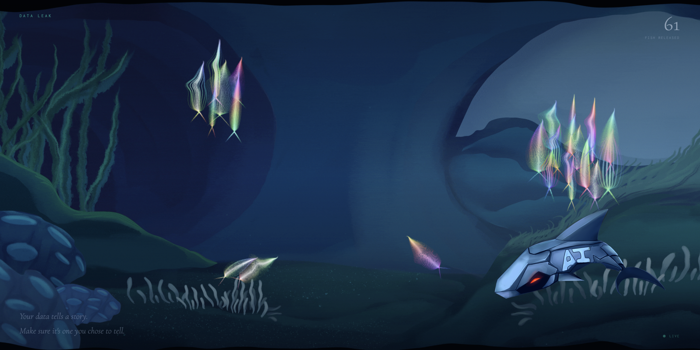
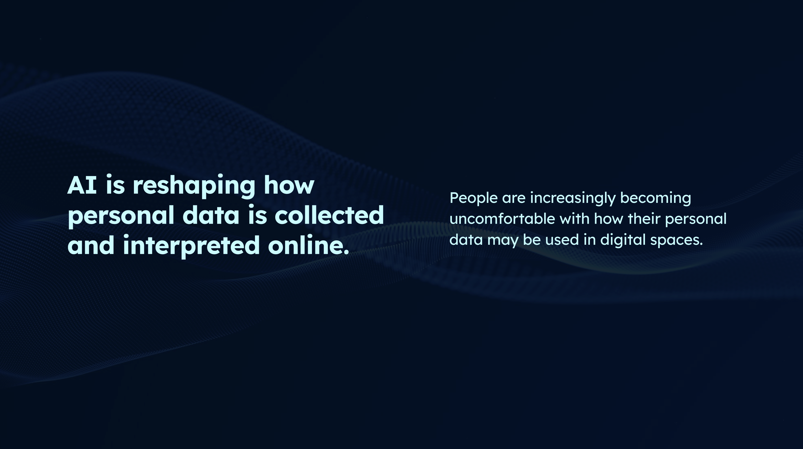
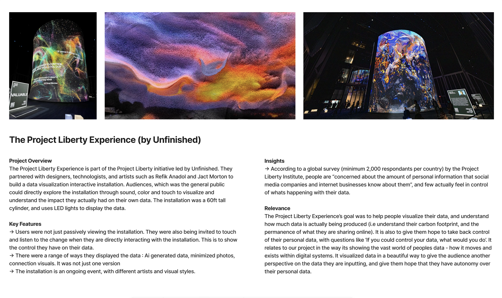
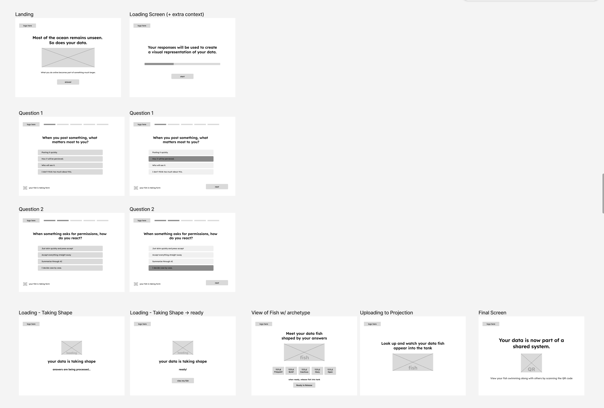

2026 | SPECIAL TOPIC
Data Leak
When looking at reflective personal hobbies, I noticed that people tend to gravitate towards digital tools and creation, likely due to their efficiency and accessibility. While the practice of analog creative journaling is not fading, the shift to digital does affect the sense of connection and slowness within the process. To address this, I designed an open, low-effort experience for students to casually explore creative journaling, understand what it can look like for them personally, and observe how others approach the practice.
UX/UI, Experience Designer
8 Weeks
Academic, Group Project
Interactive Experience, Live Projection
Loveday Tan, Danett Pepito, Chance Tavita-Jackson
CHALLENGE
making ppl aware about their data input //
APPROACH
make the topic easier to digest through a visual experience
RESEARCH QUESTION
How might we use data visualisation through an interactive installation to help people become more aware of how their personal data is used and interpreted online?
PROCESS
Research & Insights
what is the problem? How do our people understand personal data input? found through surveys and research that people are aware of ai, and don't entirely trust it, but they don't do much about it either. lol.
KEY INSIGHTS
add a ul here :D

Ideation & Inspiration
I looked at existing projects that utilized data visualization, and found 'The Liberty Project' by Unfinished, and artist Refik Anadol (year). They made data, a usually unseen thing, visualized, and beautiful to give people hope that they could have control of their data.
OPPORTUNITIES
Large scale projection to raise awareness

Prototyping & User Testing
Did wireframes, applied branding
Our other interactive team member Danett, and I conducted user testing of the entire digital experience. We mocked it through two different screens and tested with people within our target audience. We focused on testing flow, navigation, understanding of the concept
USER TESTING RESULTS
connection between fish and data needs to be clearer



Touchpoints & Advanced Prototyping
I worked on establishing the experience touchpoints, and then visualized it by creating a 3D model using Spline.
To test our idea, we also set up the experience with an iPad stand, and projected the projection tank on a large wall.

FINAL OUTCOME
Interactive Experience & Binded Journal
The final outcome was a mock-up of the installation. :D


Reflection
I really enjoyed setting up the event and creating the stuff for it.